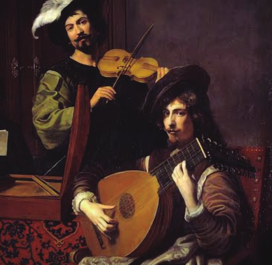
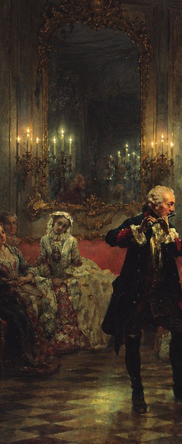

Conoce cómo empezó


Durante varios años, La música clásica ha sido denominada exclusiva y perteneciente a épocas como el romanticismo, el barroco y a familias con alto poder político y social, con el pasar de los siglos, esta música se fue adaptando a nosotros y nosotros a ella, siendo más accesible en términos de aprender y variable entre nuevos géneros actuales. Acompáñame en este viaje de su evolución.